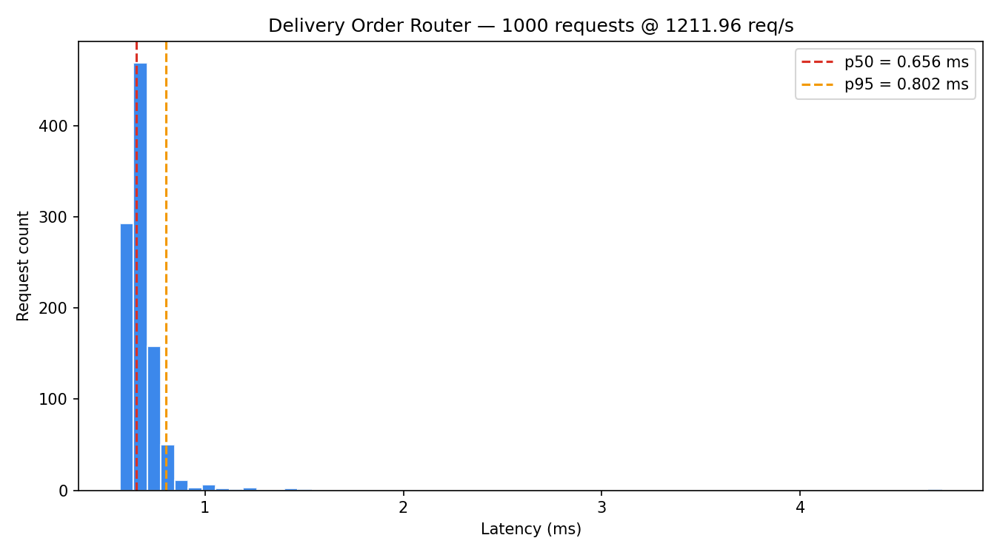
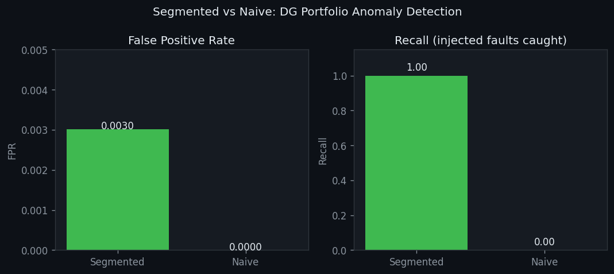

Software developer building backend systems, data pipelines, and machine learning tools. B.S. Computer Science at LIU Brooklyn, graduating May 2026. Based in NYC.
Each of my projects has shipped with invariant tests and a benchmark. An invariant test states what properties or rules should always hold for a specific piece of logic; the benchmark verifies those same rules are being upheld when there is some level of load applied. Anyone can write code that compiles, but writing code that meets an expected behavior based on some defined criteria and verifying that behavior can be much more challenging.
Featured
Every stock exchange ensures that orders are executed according to price-time priority. An order that is best priced will execute first, and when there are two or more orders of equal pricing, the earlier order is executed. This is the assurance which keeps the markets free from unfairness. When it is violated, someone overpaid or waited longer than they should have.
I created a matching engine that can be proven to maintain price-time priority by using five invariant tests, and also by utilizing a real-time view of the three things a trader typically examines: Level II depth, the depth chart, and the trade tape. By pressing the Market Impact button, a 500 quantity market order is fired into the book to show how a large order sweeps through price levels, consumes liquidity and moves the price. This is why we see slippage on trades.
The simulator runs in JavaScript. A production quality matching engine would require lock-free data structures so that multiple traders could submit their orders concurrently. It would also require kernel bypass to avoid having to pass through an operating system's network stack, and FIX protocol for submitting standard orders to exchanges. The order flow generator is simplified. Real order flow has fat tails, volatility clustering, and informed versus uninformed trader segmentation.
When a distributed system has dozens of services communicating through message queues, failures in one service can cascade across the entire architecture. Most monitoring dashboards show metrics after the fact. Understanding how a system behaves during failure, and verifying that resilience patterns like circuit breakers actually work, requires seeing the system in motion.
Rather than building a static metrics viewer, I built an interactive simulation that models 6 services with realistic failure modes. The circuit breaker implementation follows the standard state machine (CLOSED/OPEN/HALF_OPEN) with exponential backoff and jitter on recovery to prevent thundering herd. The fault injection feature lets you trigger a failure and watch the system respond in real-time. The invariant: when a circuit breaker is OPEN, zero calls are forwarded to the degraded service.
The simulation uses client-side generated data with a Poisson model that breaks down during correlated failures. A production version would consume a real Kafka topic or OpenTelemetry stream. Client-side simulation also cannot distinguish "service is down" from "network between us and service is down," which is the most dangerous ambiguity in real distributed systems. A production monitor would need split-brain detection via consensus protocol integration.
When implementing a consensus protocol from a paper, there is usually no clear way to determine if your implementation is correct. A paper outlines the requirements for the algorithm in terms of its behavior, but it does not address how the potential edge cases of concurrent execution (split vote, stale RPC with an older term number, etc.) will be detected by exception handling. Instead these are represented as invariant failures which would only manifest during adversarial timing; they also are rarely tested through test suites.
Before implementing a single line of replication logic, I wrote five Raft safety property tests: Election Safety, Log Matching, Leader Completeness, Quorum (a minority partition cannot elect a leader), and Convergence after a partition heals. Each test runs with the Go race detector, and passing via go test -race verifies that the concurrent code is safe under Go's memory model. My in-process test cluster captures communications at the transport level, allowing me to simulate network partitions and drop specific RPCs without worrying about port allocation. Because the HTTP transport and test transport share the same interface, the same Raft node codebase is used for both.
All nodes keep their logs in memory, so when a node fails, its log data is lost. Adding a persistent write-ahead log with CRC32 checksums and fsync after each entry is the most important missing piece. Without it, crash recovery requires catching up from the leader from scratch, and the safety properties only hold as long as every node stays up. That is exactly the condition a consensus protocol is designed to handle.
It is easy to implement an options pricing library, but it is difficult to make sure that what you implemented is correct. Most implementations handle the common case correctly, but they do not handle edge cases. These edge cases occur when there are specific combinations of input values that result in incorrect outputs -- deep out-of-the-money options, near-zero expiry, or extreme volatility. When these edge cases occur, the errors that were introduced into the pricing model accumulate further when creating a P&L attribution or scenario analysis based upon them.
Rather than compare outputs against a textbook reference table (therefore only covering a limited number of scenarios), I validated put-call parity as a structural property -- it must hold to 1e-10 for every combination of inputs. If put-call parity is violated, then the entire option pricing model has failed. Using this method captures classes of bugs that reference tables cannot. I also designed the application to run client-side so the demo works without a backend server -- the math is the same, the deployment is simpler.
Assuming constant volatility is unrealistic. Options markets have a volatility surface where volatility varies depending upon strikes and time-to-expiration. One possible extension would be to add surface interpolation and run another round of parity validations across each point on the volatility surface. The verification principle remains the same, but the problem becomes much harder.
If an order is dropped during a delivery process, that is significantly worse than if an order took longer to complete. In most implementations, the routing algorithm does not check whether the dasher currently has sufficient capacity prior to assigning an order. Under heavy concurrent loads, some orders will either be double-assigned or simply drop off entirely. Since there are no obvious indicators of failure, such as exceptions being thrown, dropping off may go unnoticed.
Prior to implementing any routing logic, I determined two key invariants. First, every order must be assigned exactly once. Second, no dasher can ever exceed capacity. The 6-test suite executes these checks immediately after every assignment round. The 1,000-request benchmark demonstrates the capability of executing zero violations at scale. Although 1,211 req/s represents a secondary benefit of getting the data model correct, demonstrating performance was never the primary focus of this effort.
The current routing algorithm uses a simple "least loaded" policy for selecting which dasher will receive an order. A cost-minimizing routing strategy would use both dasher location and delivery distance as factors. The invariants remain unchanged -- every order assigned exactly once and no dasher exceeds capacity -- but the routing strategy would create a more realistic simulation.

Determining anomalies within a fleet that includes solar panels of varying capacities is a much harder problem than it appears at first glance. A 5 kW rooftop panel and a 500 kW commercial array have completely different production profiles. Any single threshold value that effectively detects anomalies for larger assets will be blind to failures occurring on smaller ones. A naive monitoring system on this type of fleet detects 0 out of 3 artificially induced faults.
I segmented the assets into capacity classes prior to calculating the anomaly threshold values. Each class had a unique baseline calculated using its own probability distribution. The benchmark injected 3 known faults throughout the diverse fleet and compared segmented versus naive detection methods. Segmented detected all 3 faults with a false positive rate of 0.003. Naive detected none -- it was not merely less effective; it was entirely ineffective.
While manually segmenting assets into small and large classes worked well for this particular implementation, future efforts could utilize clustering techniques to automatically determine how best to segment similar assets from dissimilar ones. The benchmark should also demonstrate FPR over seasonal variability -- winter and summer profiles vary sufficiently enough to affect what constitutes a valid anomaly detection threshold.

More projects